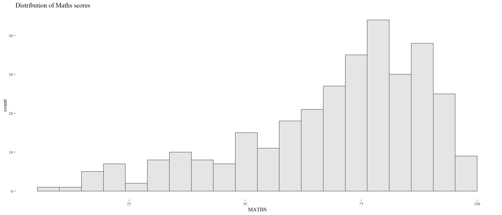
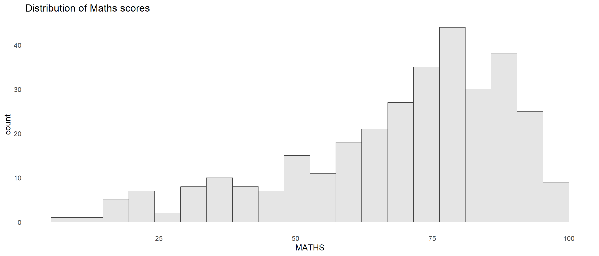
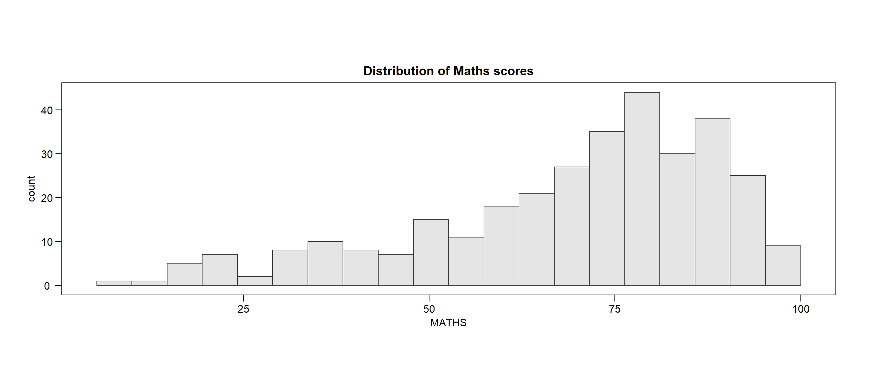
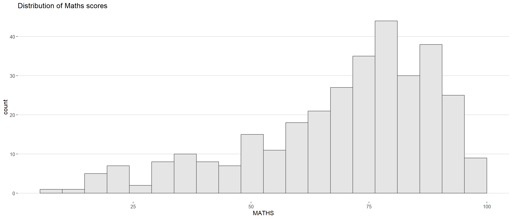
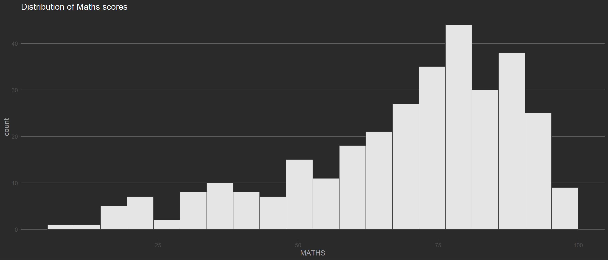
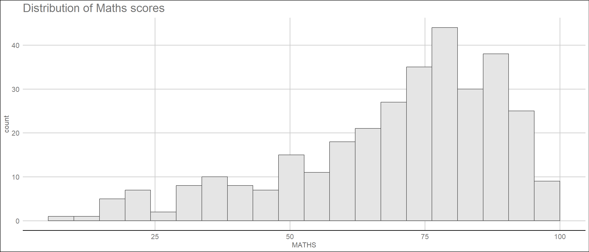
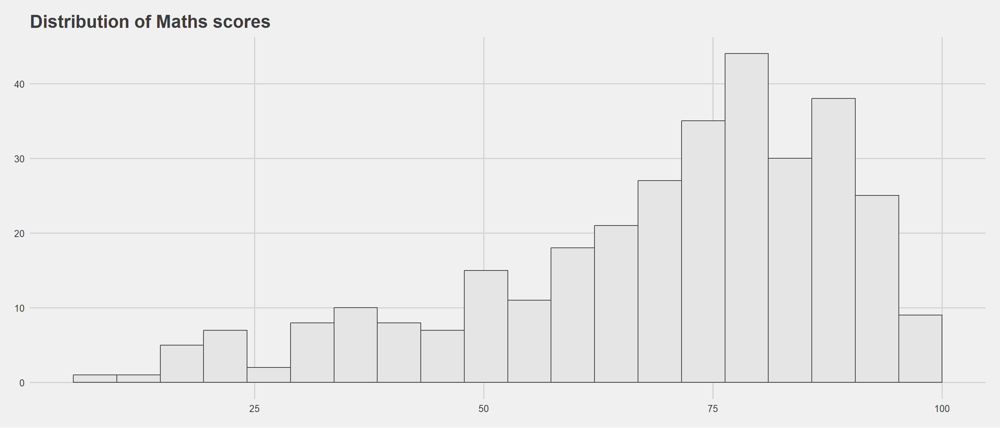

pacman::p_load(tidyverse, patchwork, ggthemes, hrbrthemes, ggrepel) Hands-on 2 - DataVis with Advanced ggplot2
1. OVERVIEW
This study explores data visualisation using Tidyverse package.
2. R PACKAGE REQUIRED
2.1 Load R Packages
3. DATA PREPARATION
3.1 Acquire Data Source
This study will be based on fictitious data set provided with this lesson.
3.2 Import Data
3.2.1 Import Data
3.2.2 Inspect Missing Value
4. DATA VISUALISATION
4.1 Plot with Label & Annotation
4.2 Theme Options
This exercise explore 3 themes packages, namely :
ggplot2 package
ggthemes
patchwork package
4.2.1 Themes by ggplot2
4.2.2 Themes by ggplot2 :: ggthemes
4.2.3 Themes by ggplot2 :: hrbrthemes
hrbrthemes package provides a base theme that focuses on typographic elements, including where various labels are placed as well as the fonts that are used.
- The second goal centers around productivity for a production workflow. In fact, this “production workflow” is the context for where the elements of hrbrthemes should be used. Consult this vignette to learn more.
Show the code
ggplot(data = exam_data,
aes(x = MATHS)) +
geom_histogram(bins = 20,
boundary = 100,
color = "grey25",
fill = "grey90") +
ggtitle("Distribution of Maths scores") +
theme_ipsum()
Show the code
ggplot(data = exam_data,
aes(x = MATHS)) +
geom_histogram(bins = 20,
boundary = 100,
color = "grey25",
fill = "grey90") +
ggtitle("Distribution of Maths scores") +
theme_ipsum(axis_title_size = 18,
base_size = 15,
grid = "Y") 
What can we learn from the code chunk below?
axis_title_sizeargument is used to increase the font size of the axis title to 18,base_sizeargument is used to increase the default axis label to 15, andgridargument is used to remove the x-axis grid lines.
4.3 Composite Plot with Facet Option
Creating Composite Graphics: pathwork methods
It is not unusual that multiple graphs are required to tell a compelling visual story. There are several ggplot2 extensions provide functions to compose figure with multiple graphs. In this section, I am going to shared with you patchwork.
Patchwork package has a very simple syntax where we can create layouts super easily. Here’s the general syntax that combines: - Two-Column Layout using the Plus Sign +. - Parenthesis () to create a subplot group. - Two-Row Layout using the Division Sign \
create composite plot by combining multiple graphs. First, let us create three statistical graphics.\
Show the code
p1 <- ggplot(data = exam_data,
aes(x = MATHS)) +
geom_histogram(bins = 20,
boundary = 100,
color = "grey25",
fill = "grey90") +
coord_cartesian(xlim = c(0,100)) +
ggtitle("Distribution of Maths scores")Show the code
p2 <- ggplot(data = exam_data,
aes(x = ENGLISH)) +
geom_histogram(bins = 20,
boundary = 100,
color = "grey25",
fill = "grey90") +
coord_cartesian(xlim = c(0,100)) +
ggtitle("Distribution of English scores")Show the code
p3 <- ggplot(data = exam_data,
aes(x = MATHS,
y = ENGLISH)) +
geom_point() +
geom_smooth(method = lm,
size = 0.5) +
coord_cartesian(xlim = c(0,100),
ylim = c(0,100)) +
ggtitle("English scores versus Maths scores for Primary 3")Show the code
p1 + p2 / p3
| will place the plots beside each other, while / will stack them.
Show the code
(p1 / p2) | p3
Plot assembly - https://patchwork.data-imaginist.com/articles/guides/assembly.html
Working with patchwork
patchwork also provides auto-tagging capabilities, in order to identify subplots in text:
Show the code
((p1 / p2) | p3) +
plot_annotation(tag_levels = 'I')
Show the code
patchwork <- (p1 / p2) | p3
patchwork & theme_economist()
Working with patchwork
Beside providing functions to place plots next to each other based on the provided layout. With inset_element() of patchwork, we can place one or several plots or graphic elements freely on top or below another plot
Show the code
p3 + inset_element(p2,
left = 0.02,
bottom = 0.7,
right = 0.5,
top = 1)
7. REFERENCES
T.S. Kam. (2023). Handout lesson material for Hands-on Exercise 2. Singapore Management University. https://isss608-ay2022-23jan.netlify.app/hands-on_ex/hands-on_ex02/hands-on_ex02-beyond_ggplot2#/title-slide